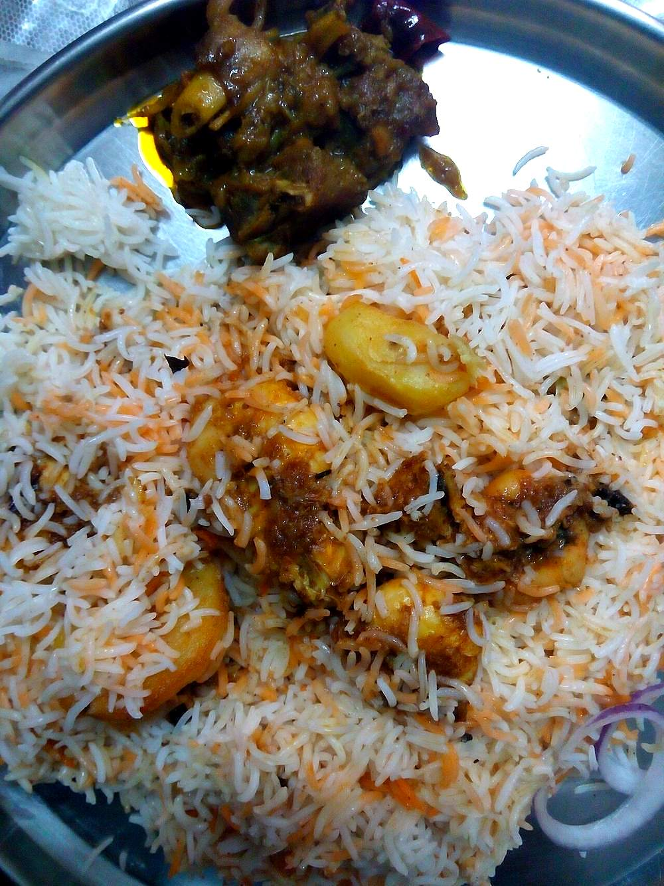

Prawn Rissois
crisp half-moon pastries with a creamy prawn filling, the standard Goan party snack

Contains: milk, gluten, egg, crustacean shellfish
Ingredients
Quantities for 6.
- 2 cups Maida
- 1 cup Milk
- 1 cup Water
- 2 tbsp Butter
- 300g small, peeled, deveined and chopped Prawns
- 1 medium, very finely chopped Onion
- 2, finely chopped Green Chilli
- 3 cloves, minced Garlicoptional
- 1 tsp, coarsely ground Black Pepper
- 3 tbsp, chopped Coriander Leavesoptional
- 1/2, juiced Lemon
- 2, beaten Eggsfor the crumb coating
- 2 cups fine dry breadcrumbs Bread
- 500ml, for deep frying Neutral Oil
- to taste Salt
Cookware
stovetop, kadhai
Checked against the ingredient list for ten allergens: milk, egg, fish, crustaceans, tree nuts, peanuts, sesame, mustard, soy and gluten. Brands vary, so read the label on anything new to you.
Before you start
- The dough is a hot-water pastry made in a pan, not a rolled shortcrust. It must be worked while hot, so have a bowl and a wooden spoon ready.
- The filling has to be cold and stiff before you fill anything. Make it first and refrigerate it an hour.
- These freeze beautifully at the crumbed stage, which is how most Goan households actually make them. Assemble one day, fry the next.
Method
- For the filling, cook the onion, garlic and green chilli in 1 tbsp butter over medium heat for 5 minutes until soft and translucent.
- Add the chopped prawns, pepper and salt and cook 3 minutes, until just pink, then stir in 2 tbsp of the flour and 1/2 cup of the milk.Three minutes maximum. The prawns cook again in the fryer.
- Cook 3-4 minutes more, stirring, until it thickens into a stiff paste that holds a ridge. Finish with lemon and coriander and chill 1 hour.
- For the dough, bring the water, remaining milk, remaining butter and 1 tsp salt to a rolling boil.
- Tip in the rest of the flour all at once and beat hard with a wooden spoon until it forms a single ball that leaves the pan clean, about 2 minutes.All at once and beat immediately. Adding it gradually gives you lumps you will never get out.
- Turn it out, and as soon as you can bear the heat, knead 5 minutes until smooth and elastic. Cover and rest 15 minutes.
- Roll the warm dough thin, about 2mm, and cut 9cm rounds.Work with a quarter of the dough at a time and keep the rest covered. It stiffens fast and cracks when cold.
- Place a heaped teaspoon of filling on each round, fold into a half-moon and seal the edge firmly, pressing out any air.
- Dip each in beaten egg, then press into the breadcrumbs to coat evenly. Chill 20 minutes.
- Heat the oil to 175C (a crumb dropped in should sizzle and rise at once) and fry in batches of five for 3 minutes, until deep gold.Too hot and the crumb burns before the pastry cooks; too cool and they drink oil. Adjust between batches.
- Drain on a rack, not paper, and serve hot.
Safe temperatures: Prawns, crab and squid are done when the flesh is opaque and pearly right through. Egg dishes are done at 71°C / 160°F; a whole egg when the yolk and white are both firm. Reheat leftovers to 74°C / 165°F. FoodSafety.gov
Storage
Fry to order. Crumbed, unfried rissois keep 3 months frozen on a tray then bagged. Fry from frozen, two minutes longer. Fried ones go soft within a few hours.
Nutrition Good estimate
Medium protein: 19 g a serving, 18% of the calories
| Per serving205 g | Per 100 g | |
|---|---|---|
| Calories | 421 kcal | 206 kcal |
| Protein | 19.1 g | 9 g |
| Carbohydrate | 42.8 g | 21 g |
| of which sugars | 3.8 g | 2 g |
| Fibre | 2.2 g | 1 g |
| Fat | 19.2 g | 9 g |
| of which saturated | 5.0 g | 2 g |
| of which unsaturated | 12.8 g | 6 g |
Estimated from raw ingredients using USDA FoodData Central.
More like this: · Goan recipes
Times, yields, allergens and nutrition are guidance. Use your own judgement on doneness and on storing. More in About.